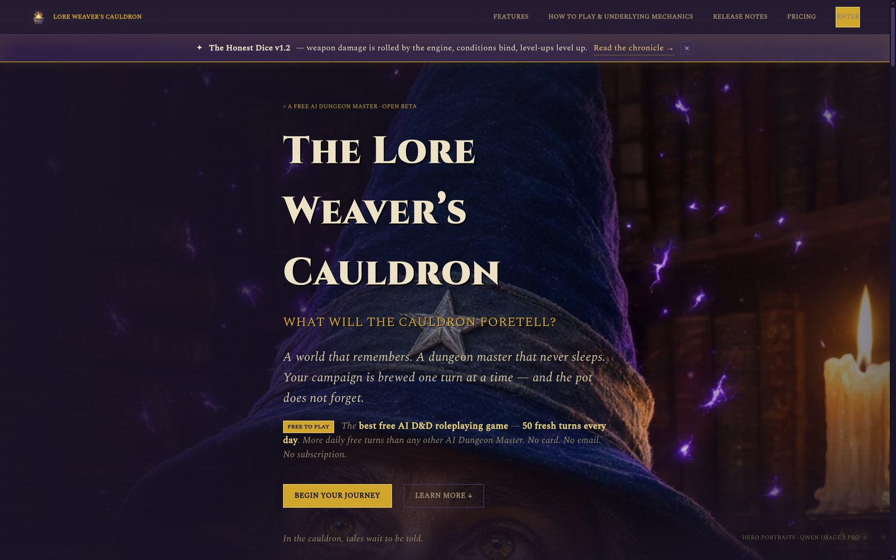
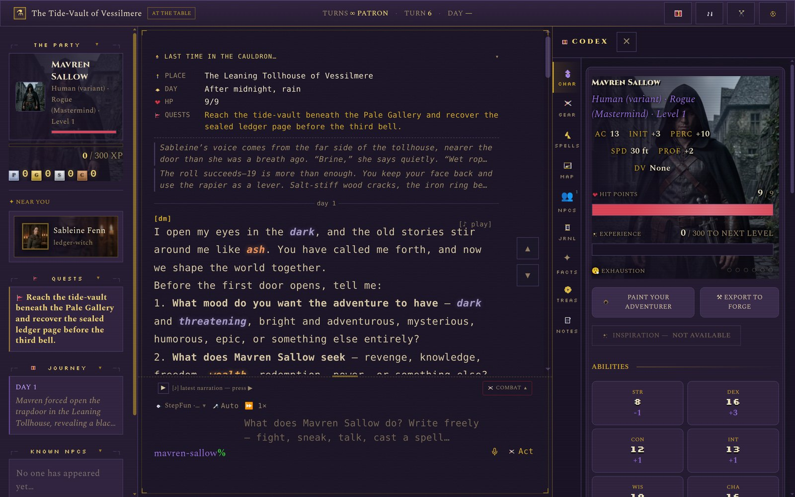
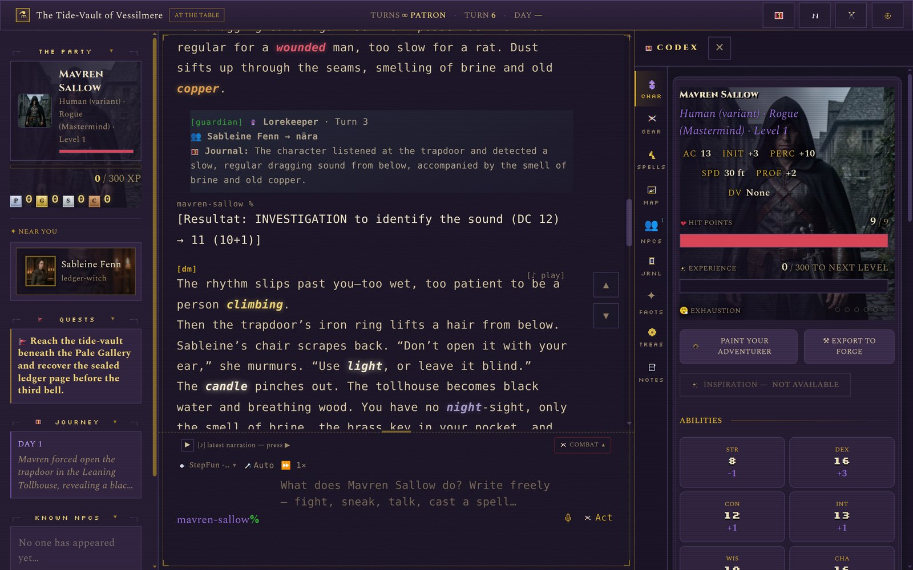
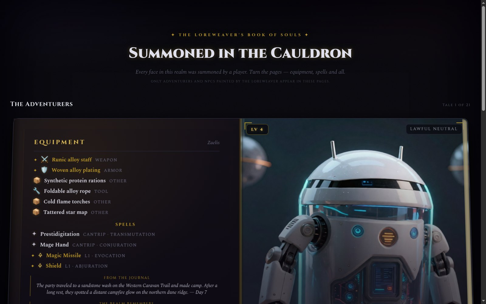
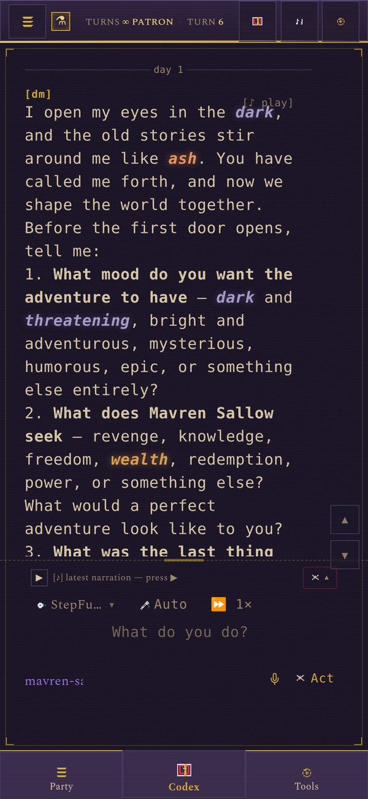

A free AI Dungeon Master · Open Beta
A world that remembers, a dungeon master that never sleeps — all in words, dice and ink. Here is what the table looks like from the inside.

Where every adventurer swears in — free, no card, no email.

The DM narrates, you answer in plain words — and the world writes itself into the books.

A natural 20 still feels like lightning — rolled by real code, never invented.

Every summoned soul in a page-turning book — AI-generated portraits, names and tales, open to the world.

The whole table fits in a pocket — dice, narration and your party, anywhere the road goes.
50 fresh turns every day. No card. No email needed.